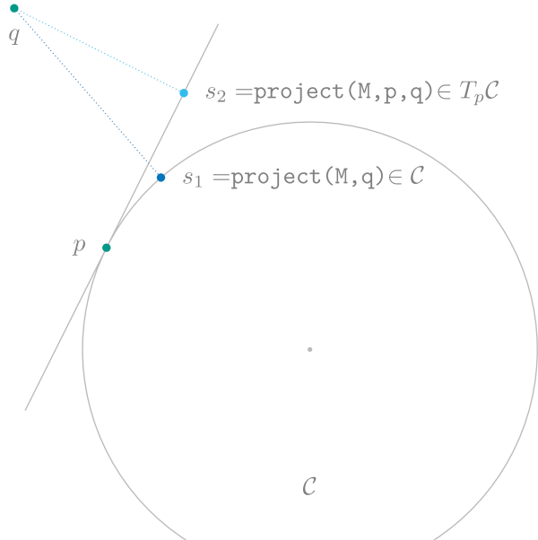

Functions on manifolds
This page collects several basic functions on manifolds.
Validation
ince points and tangent vectors are represented usually as multidimensional arrays or for more complex cases as structs, there might be values, which invalidate a point of tangent vector. Here the interface provides two high level functions.
ManifoldsBase.is_point — Functionis_point(M::AbstractManifold, p, throw_error = false; kwargs...)Return whether p is a valid point on the AbstractManifold M.
If throw_error is false, the function returns either true or false. If throw_error is true, the function either returns true or throws an error. By default the function calls check_point(M, p; kwargs...) and checks whether the returned value is nothing or an error.
ManifoldsBase.is_vector — Functionis_vector(M::AbstractManifold, p, X, throw_error = false; check_base_point=true, kwargs...)Return whether X is a valid tangent vector at point p on the AbstractManifold M. Returns either true or false.
If throw_error is false, the function returns either true or false. If throw_error is true, the function either returns true or throws an error. By default the function calls check_vector(M, p, X; kwargs...) and checks whether the returned value is nothing or an error.
If check_base_point is true, then the point p will be first checked using the check_point function.
These are mapped to the lower level functions
ManifoldsBase.check_point — Functioncheck_point(M::AbstractManifold, p; kwargs...) -> Union{Nothing,String}Return nothing when p is a point on the AbstractManifold M. Otherwise, return an error with description why the point does not belong to manifold M.
By default, check_point returns nothing, i.e. if no checks are implemented, the assumption is to be optimistic for a point not deriving from the AbstractManifoldPoint type.
check_point(M::AbstractPowerManifold, p; kwargs...)Check whether p is a valid point on an AbstractPowerManifold M, i.e. each element of p has to be a valid point on the base manifold. If p is not a point on M a CompositeManifoldError consisting of all error messages of the components, for which the tests fail is returned.
The tolerance for the last test can be set using the kwargs....
ManifoldsBase.check_vector — Functioncheck_vector(M::AbstractManifold, p, X; kwargs...) -> Union{Nothing,String}Check whether X is a valid tangent vector in the tangent space of p on the AbstractManifold M. An implementation does not have to validate the point p. If it is not a tangent vector, an error string should be returned.
By default, check_vector returns nothing, i.e. if no checks are implemented, the assumption is to be optimistic for tangent vectors not deriving from the TVector type.
check_vector(M::AbstractPowerManifold, p, X; kwargs... )Check whether X is a tangent vector to p an the AbstractPowerManifold M, i.e. atfer check_point(M, p), and all projections to base manifolds must be respective tangent vectors. If X is not a tangent vector to p on M a CompositeManifoldError consisting of all error messages of the components, for which the tests fail is returned.
The tolerance for the last test can be set using the kwargs....
ManifoldsBase.check_size — Functioncheck_size(M::AbstractManifold, p)
check_size(M::AbstractManifold, p, X)Check whether p has the right representation_size for a AbstractManifold M. Additionally if a tangent vector is given, both p and X are checked to be of corresponding correct representation sizes for points and tangent vectors on M.
By default, check_size returns nothing, i.e. if no checks are implemented, the assumption is to be optimistic.
The exponential and the logarithmic map, and geodesics
Geodesics are the generalizations of a straight line to manifolds, i.e. their intrinsic acceleration is zero. Together with geodesics one also obtains the exponential map and its inverse, the logarithmic map. Informally speaking, the exponential map takes a vector (think of a direction and a length) at one point and returns another point, which lies towards this direction at distance of the specified length. The logarithmic map does the inverse, i.e. given two points, it tells which vector “points towards” the other point.
Base.exp — Methodexp(M::AbstractManifold, p, X)
exp(M::AbstractManifold, p, X, t::Real = 1)Compute the exponential map of tangent vector X, optionally scaled by t, at point p from the manifold AbstractManifold M, i.e.
\[\exp_p X = γ_{p,X}(1),\]
where $γ_{p,X}$ is the unique geodesic starting in $γ(0)=p$ such that $\dot γ(0) = X$.
See also shortest_geodesic, retract.
Base.log — Methodlog(M::AbstractManifold, p, q)Compute the logarithmic map of point q at base point p on the AbstractManifold M. The logarithmic map is the inverse of the exponential map. Note that the logarithmic map might not be globally defined.
See also inverse_retract.
ManifoldsBase.exp! — Methodexp!(M::AbstractManifold, q, p, X)
exp!(M::AbstractManifold, q, p, X, t::Real = 1)Compute the exponential map of tangent vector X, optionally scaled by t, at point p from the manifold AbstractManifold M. The result is saved to q.
See also exp.
ManifoldsBase.geodesic — Methodgeodesic(M::AbstractManifold, p, X) -> FunctionGet the geodesic with initial point p and velocity X on the AbstractManifold M. A geodesic is a curve of zero acceleration. That is for the curve $γ_{p,X}: I → \mathcal M$, with $γ_{p,X}(0) = p$ and $\dot γ_{p,X}(0) = X$ a geodesic further fulfills
\[∇_{\dot γ_{p,X}(t)} \dot γ_{p,X}(t) = 0,\]
i.e. the curve is acceleration free with respect to the Riemannian metric. This yields, that the curve has constant velocity that is locally distance-minimizing.
This function returns a function of (time) t.
geodesic(M::AbstractManifold, p, X, t::Real)
geodesic(M::AbstractManifold, p, X, T::AbstractVector) -> AbstractVectorReturn the point at time t or points at times t in T along the geodesic.
ManifoldsBase.log! — Methodlog!(M::AbstractManifold, X, p, q)Compute the logarithmic map of point q at base point p on the AbstractManifold M. The result is saved to X. The logarithmic map is the inverse of the exp!onential map. Note that the logarithmic map might not be globally defined.
see also log and inverse_retract!,
ManifoldsBase.shortest_geodesic — Methodshortest_geodesic(M::AbstractManifold, p, q) -> FunctionGet a geodesic $γ_{p,q}(t)$ whose length is the shortest path between the points pand q, where $γ_{p,q}(0)=p$ and $γ_{p,q}(1)=q$. When there are multiple shortest geodesics, a deterministic choice will be returned.
This function returns a function of time, which may be a Real or an AbstractVector.
shortest_geodesic(M::AabstractManifold, p, q, t::Real)
shortest_geodesic(M::AbstractManifold, p, q, T::AbstractVector) -> AbstractVectorReturn the point at time t or points at times t in T along the shortest geodesic.
Vector transport
There are three main functions for vector transport:
Different types of vector transport are implemented using subtypes of AbstractVectorTransportMethod:
ManifoldsBase.AbstractLinearVectorTransportMethod — TypeAbstractLinearVectorTransportMethod <: AbstractVectorTransportMethodAbstract type for linear methods for transporting vectors, that is transport of a linear combination of vectors is a linear combination of transported vectors.
ManifoldsBase.AbstractVectorTransportMethod — TypeAbstractVectorTransportMethodAbstract type for methods for transporting vectors. Such vector transports are not necessarily linear.
See also
ManifoldsBase.DifferentiatedRetractionVectorTransport — TypeDifferentiatedRetractionVectorTransport{R<:AbstractRetractionMethod} <:
AbstractVectorTransportMethodA type to specify a vector transport that is given by differentiating a retraction. This can be introduced in two ways. Let $\mathcal M$ be a Riemannian manifold, $p\in\mathcal M$ a point, and $X,Y\in T_p\mathcal M$ denote two tangent vectors at $p$.
Given a retraction (cf. AbstractRetractionMethod) $\operatorname{retr}$, the vector transport of X in direction Y (cf. vector_transport_direction) by differentiation this retraction, is given by
\[\mathcal T^{\operatorname{retr}}_{p,Y}X = D_Y\operatorname{retr}_p(Y)[X] = \frac{\mathrm{d}}{\mathrm{d}t}\operatorname{retr}_p(Y+tX)\Bigr|_{t=0}.\]
see [AbsilMahonySepulchre2008], Section 8.1.2 for more details.
This can be phrased similarly as a vector_transport_to by introducing $q=\operatorname{retr}_pX$ and defining
\[\mathcal T^{\operatorname{retr}}_{q \gets p}X = \mathcal T^{\operatorname{retr}}_{p,Y}X\]
which in practice usually requires the inverse_retract to exists in order to compute $Y = \operatorname{retr}_p^{-1}q$.
Constructor
DifferentiatedRetractionVectorTransport(m::AbstractRetractionMethod)ManifoldsBase.ParallelTransport — TypeParallelTransport <: AbstractVectorTransportMethodSpecify to use parallel transport vector transport method.
To be precise let $c(t)$ be a curve depending on the method
- the (assumed to be unique) geodesic $c(t) = γ_{p,q}(t)$ from $γ_{p,q}(0)=p$ to $γ_{p,q}(1)=q$ for
vector_transport_to$\mathcal P_{q\gets p}Y$ - the unique geodesic $c(t)=γ_{p,X}(t)$ from $γ_{p,X}(0)=p$ into direction $\dot γ_{p,X}(0)=X$ for
vector_transport_direction$\mathcal P_{p,X}Y$ - a given curve $c(0)=p$ for
vector_transport_along$\mathcal P^cY$
In these cases $Y\in T_p\mathcal M$ is the vector that we would like to transport from the tangent space at $p=c(0)$ to the tangent space at $c(1)$.
Let $Z\colon [0,1] \to T\mathcal M$, $Z(t)\in T_{c(t)}\mathcal M$ be a smooth vector field along the curve $c$ with $Z(0) = Y$, such that $Z$ is parallel, i.e. its covariant derivative $\frac{\mathrm{D}}{\mathrm{d}t}Z$ is zero. Note that such a $Z$ always exists and is unique.
Then the parallel transport is given by $Z(1)$.
ManifoldsBase.PoleLadderTransport — TypePoleLadderTransport <: AbstractVectorTransportMethodSpecify to use pole_ladder as vector transport method within vector_transport_to, vector_transport_direction, or vector_transport_along, i.e.
Let $X\in T_p\mathcal M$ be a tangent vector at $p\in\mathcal M$ and $q\in\mathcal M$ the point to transport to. Then $x = \exp_pX$ is used to call y =pole_ladder(M, p, x, q) and the resulting vector is obtained by computing $Y = -\log_qy$.
The PoleLadderTransport posesses two advantages compared to SchildsLadderTransport:
- it is cheaper to evaluate, if you want to transport several vectors, since the mid point $c$ then stays unchanged.
- while both methods are exact if the curvature is zero, pole ladder is even exact in symmetric Riemannian manifolds[Pennec2018]
The pole ladder was was proposed in [LorenziPennec2014]. Its name stems from the fact that it resembles a pole ladder when applied to a sequence of points usccessively.
Constructor
PoleLadderTransport(
retraction = ExponentialRetraction(),
inverse_retraction = LogarithmicInverseRetraction(),
)Construct the classical pole ladder that employs exp and log, i.e. as proposed in[LorenziPennec2014]. For an even cheaper transport the inner operations can be changed to an AbstractRetractionMethod retraction and an AbstractInverseRetractionMethod inverse_retraction, respectively.
ManifoldsBase.ProjectionTransport — TypeProjectionTransport <: AbstractVectorTransportMethodSpecify to use projection onto tangent space as vector transport method within vector_transport_to, vector_transport_direction, or vector_transport_along. See project for details.
ManifoldsBase.ScaledVectorTransport — TypeScaledVectorTransport{T} <: AbstractVectorTransportMethodIntroduce a scaled variant of any AbstractVectorTransportMethod T, as introduced in [SatoIwai2013] for some $X\in T_p\mathcal M$ as
\[ \mathcal T^{\mathrm{S}}(X) = \frac{\lVert X\rVert_p}{\lVert \mathcal T(X)\rVert_q}\mathcal T(X).\]
Note that the resulting point q has to be known, i.e. for vector_transport_direction the curve or more precisely its end point has to be known (via an exponential map or a retraction). Therefore a default implementation is only provided for the vector_transport_to
Constructor
ScaledVectorTransport(m::AbstractVectorTransportMethod)ManifoldsBase.SchildsLadderTransport — TypeSchildsLadderTransport <: AbstractVectorTransportMethodSpecify to use schilds_ladder as vector transport method within vector_transport_to, vector_transport_direction, or vector_transport_along, i.e.
Let $X\in T_p\mathcal M$ be a tangent vector at $p\in\mathcal M$ and $q\in\mathcal M$ the point to transport to. Then
\[P^{\mathrm{S}}_{q\gets p}(X) = \log_q\bigl( \operatorname{retr}_p ( 2\operatorname{retr}_p^{-1}c ) \bigr),\]
where $c$ is the mid point between $q$ and $d=\exp_pX$.
This method employs the internal function schilds_ladder(M, p, d, q) that avoids leaving the manifold.
The name stems from the image of this paralleltogram in a repeated application yielding the image of a ladder. The approximation was proposed in [EhlersPiraniSchild1972].
Constructor
SchildsLadderTransport(
retraction = ExponentialRetraction(),
inverse_retraction = LogarithmicInverseRetraction(),
)Construct the classical Schilds ladder that employs exp and log, i.e. as proposed in[EhlersPiraniSchild1972]. For an even cheaper transport these inner operations can be changed to an AbstractRetractionMethod retraction and an AbstractInverseRetractionMethod inverse_retraction, respectively.
ManifoldsBase._vector_transport_along! — Methodfunction vector_transport_along!(
M::AbstractManifold,
Y,
p,
X,
c::AbstractVector,
method::PoleLadderTransport
)Compute the vector transport along a discretized curve using PoleLadderTransport succesively along the sampled curve. This method is avoiding additional allocations as well as inner exp/log by performing all ladder steps on the manifold and only computing one tangent vector in the end.
ManifoldsBase._vector_transport_along! — Methodvector_transport_along!(
M::AbstractManifold,
Y,
p,
X,
c::AbstractVector,
method::SchildsLadderTransport
)Compute the vector transport along a discretized curve using SchildsLadderTransport succesively along the sampled curve. This method is avoiding additional allocations as well as inner exp/log by performing all ladder steps on the manifold and only computing one tangent vector in the end.
ManifoldsBase._vector_transport_to! — Method_vector_transport_to!(M::AbstractManifold, Y, p, X, q, method::PoleLadderTransport)Perform a vector transport by using PoleLadderTransport.
ManifoldsBase._vector_transport_to! — Method_vector_transport_to!(M::AbstractManifold, Y, p, X, q, method::SchildsLadderTransport)Perform a vector transport by using SchildsLadderTransport.
ManifoldsBase.default_vector_transport_method — Methoddefault_vector_transport_method(M::AbstractManifold)The AbstractVectorTransportMethod that is used when calling vector_transport_along, vector_transport_to, or vector_transport_direction without specifying the vector transport method. By default, this is ParallelTransport.
ManifoldsBase.pole_ladder — Functionpole_ladder(
M,
p,
d,
q,
c = mid_point(M, p, q);
retraction=default_retraction_method(M),
inverse_retraction=default_inverse_retraction_method(M)
)Compute an inner step of the pole ladder, that can be used as a vector_transport_to. Let $c = \gamma_{p,q}(\frac{1}{2})$ mid point between p and q, then the pole ladder is given by
\[ \operatorname{Pl}(p,d,q) = \operatorname{retr}_d (2\operatorname{retr}_d^{-1}c)\]
Where the classical pole ladder employs $\operatorname{retr}_d=\exp_d$ and $\operatorname{retr}_d^{-1}=\log_d$ but for an even cheaper transport these can be set to different AbstractRetractionMethod and AbstractInverseRetractionMethod.
When you have $X=log_pd$ and $Y = -\log_q \operatorname{Pl}(p,d,q)$, you will obtain the PoleLadderTransport. When performing multiple steps, this method avoidsd the switching to the tangent space. Keep in mind that after $n$ successive steps the tangent vector reads $Y_n = (-1)^n\log_q \operatorname{Pl}(p_{n-1},d_{n-1},p_n)$.
It is cheaper to evaluate than schilds_ladder, sinc if you want to form multiple ladder steps between p and q, but with different d, there is just one evaluation of a geodesic each., since the center c can be reused.
ManifoldsBase.pole_ladder! — Functionpole_ladder(
M,
pl,
p,
d,
q,
c = mid_point(M, p, q),
X = allocate_result_type(M, log, d, c);
retraction = default_retraction_method(M),
inverse_retraction = default_inverse_retraction_method(M),
)Compute the pole_ladder, i.e. the result is saved in pl. X is used for storing intermediate inverse retraction.
ManifoldsBase.schilds_ladder — Functionschilds_ladder(
M,
p,
d,
q,
c = mid_point(M, q, d);
retraction = default_retraction_method(M),
inverse_retraction = default_inverse_retraction_method(M),
)Perform an inner step of schilds ladder, which can be used as a vector_transport_to, see SchildsLadderTransport. Let $c = \gamma_{q,d}(\frac{1}{2})$ denote the mid point on the shortest geodesic connecting $q$ and the point $d$. Then Schild's ladder reads as
\[\operatorname{Sl}(p,d,q) = \operatorname{retr}_x( 2\operatorname{retr}_p^{-1} c)\]
Where the classical Schilds ladder employs $\operatorname{retr}_d=\exp_d$ and $\operatorname{retr}_d^{-1}=\log_d$ but for an even cheaper transport these can be set to different AbstractRetractionMethod and AbstractInverseRetractionMethod.
In consistency with pole_ladder you can change the way the mid point is computed using the optional parameter c, but note that here it's the mid point between q and d.
When you have $X=log_pd$ and $Y = \log_q \operatorname{Sl}(p,d,q)$, you will obtain the PoleLadderTransport. Then the approximation to the transported vector is given by $\log_q\operatorname{Sl}(p,d,q)$.
When performing multiple steps, this method avoidsd the switching to the tangent space. Hence after $n$ successive steps the tangent vector reads $Y_n = \log_q \operatorname{Pl}(p_{n-1},d_{n-1},p_n)$.
ManifoldsBase.schilds_ladder! — Functionschilds_ladder!(
M,
sl
p,
d,
q,
c = mid_point(M, q, d),
X = allocate_result_type(M, log, d, c);
retraction = default_retraction_method(M),
inverse_retraction = default_inverse_retraction_method(M),
)Compute schilds_ladder and return the value in the parameter sl. If the required mid point c was computed before, it can be passed using c, and the allocation of new memory can be avoided providing a tangent vector X for the interims result.
ManifoldsBase.vector_transport_along — Functionvector_transport_along(M::AbstractManifold, p, X, c)
vector_transport_along(M::AbstractManifold, p, X, c, method::AbstractVectorTransportMethod)Transport a vector X from the tangent space at a point p on the AbstractManifold M along the curve represented by c using the method, which defaults to default_vector_transport_method(M).
ManifoldsBase.vector_transport_along! — Functionvector_transport_along!(M::AbstractManifold, Y, p, X, c)
vector_transport_along!(M::AbstractManifold, Y, p, X, c, method::AbstractVectorTransportMethod)Transport a vector X from the tangent space at a point p on the AbstractManifold M along the curve represented by c using the method, which defaults to default_vector_transport_method(M). The result is saved to Y.
ManifoldsBase.vector_transport_along! — Methodvector_transport_along!(
M::AbstractManifold,
Y,
p,
X,
c::AbstractVector,
method::AbstractVectorTransportMethod
) where {T}Compute the vector transport along a discretized curve c using an AbstractVectorTransportMethod method succesively along the sampled curve.
ManifoldsBase.vector_transport_direction — Functionvector_transport_direction(M::AbstractManifold, p, X, d)
vector_transport_direction(M::AbstractManifold, p, X, d, method::AbstractVectorTransportMethod)Transport a vector X from the tangent space at a point p on the AbstractManifold M in the direction indicated by the tangent vector d at p. By default, retract and vector_transport_to! are used with the method, which defaults to default_vector_transport_method(M).
ManifoldsBase.vector_transport_direction! — Functionvector_transport_direction!(M::AbstractManifold, Y, p, X, d)
vector_transport_direction!(M::AbstractManifold, Y, p, X, d, method::AbstractVectorTransportMethod)Transport a vector X from the tangent space at a point p on the AbstractManifold M in the direction indicated by the tangent vector d at p. By default, retract and vector_transport_to! are used with the method, which defaults to default_vector_transport_method(M). The result is saved to Y.
ManifoldsBase.vector_transport_to — Functionvector_transport_to(M::AbstractManifold, p, X, q)
vector_transport_to(M::AbstractManifold, p, X, q, method::AbstractVectorTransportMethod)Transport a vector X from the tangent space at a point p on the AbstractManifold M along the shortest_geodesic to the tangent space at another point q. By default, the AbstractVectorTransportMethod method is default_vector_transport_method(M).
ManifoldsBase.vector_transport_to! — Functionvector_transport_to!(M::AbstractManifold, Y, p, X, q)
vector_transport_to!(M::AbstractManifold, Y, p, X, q, method::AbstractVectorTransportMethod)Transport a vector X from the tangent space at a point p on the AbstractManifold M along the shortest_geodesic to the tangent space at another point q. By default, the AbstractVectorTransportMethod method is default_vector_transport_method(M). The result is saved to Y.
Projections
A manifold might be embedded in some space. Often this is implicitly assumed, for example the complex Circle is embedded in the complex plane. Let‘s keep the circle in mind in the following as a simple example. For the general case see of explicitly stating an embedding and/or distinguising several, different embeddings, see Embedded Manifolds below.
To make this a little more concrete, let‘s assume we have a manifold $\mathcal M$ which is embedded in some manifold $\mathcal N$ and the image $i(\mathcal M)$ of the embedding function $i$ is a closed set (with respect to the topology on $\mathcal N$). Then we can do two kinds of projections.
To make this concrete in an example for the Circle $\mathcal M=\mathcal C := \{ p ∈ ℂ | |p| = 1\}$ the embedding can be chosen to be the manifold $N = ℂ$ and due to our representation of $\mathcal C$ as complex numbers already, we have $i(p) = p$ the identity as the embedding function.
- Given a point $p∈\mathcal N$ we can look for the closest point on the manifold $\mathcal M$ formally as
\[ \operatorname*{arg\,min}_{q\in \mathcal M} d_{\mathcal N}(i(q),p)\]
And this resulting $q$ we call the projection of $p$ onto the manifold $\mathcal M$.
- Given a point $p∈\mathcal M$ and a vector in $X\inT_{i(p)}\mathcal N$ in the embedding we can similarly look for the closest point to $Y∈ T_p\mathcal M$ using the push forward $\mathrm{d}i_p$ of the embedding.
\[ \operatorname*{arg\,min}_{Y\in T_p\mathcal M} \lVert \mathrm{d}i(p)[Y] - X \rVert_{i(p)}\]
And we call the resulting $Y$ the projection of $X$ onto the tangent space $T_p\mathcal M$ at $p$.
Let‘s look at the little more concrete example of the complex Circle again. Here, the closest point of $p ∈ ℂ$ is just the projection onto the circle, or in other words $q = \frac{p}{\lvert p \rvert}$. A tangent space $T_p\mathcal C$ in the embedding is the line orthogonal to a point $p∈\mathcal C$ through the origin. This can be better visualized by looking at $p+T_p\mathcal C$ which is actually the line tangent to $p$. Note that this shift does not change the resulting projection relative to the origin of the tangent space.
Here the projection can be computed as the classical projection onto the line, i.e. $Y = X - ⟨X,p⟩X$.
this is illustrated in the following figure

ManifoldsBase.project! — Methodproject!(M::AbstractManifold, Y, p, X)Project ambient space representation of a vector X to a tangent vector at point p on the AbstractManifold M. The result is saved in vector Y. This method is only available for manifolds where implicitly an embedding or ambient space is given. Additionally, project! includes changing data representation, if applicable, i.e. if the tangents on M are not represented in the same way as points on the embedding, the representation is changed accordingly. This is the case for example for Lie groups, when tangent vectors are represented in the Lie algebra. after projection the change to the Lie algebra is perfomed, too.
See also: EmbeddedManifold, embed!
ManifoldsBase.project! — Methodproject!(M::AbstractManifold, q, p)Project point p from the ambient space onto the AbstractManifold M. The result is storedin q. This method is only available for manifolds where implicitly an embedding or ambient space is given. Additionally, the projection includes changing data representation, if applicable, i.e. if the points on M are not represented in the same array data, the data is changed accordingly.
See also: EmbeddedManifold, embed!
ManifoldsBase.project — Methodproject(M::AbstractManifold, p, X)Project ambient space representation of a vector X to a tangent vector at point p on the AbstractManifold M. This method is only available for manifolds where implicitly an embedding or ambient space is given. Additionally, project includes changing data representation, if applicable, i.e. if the tangents on M are not represented in the same way as points on the embedding, the representation is changed accordingly. This is the case for example for Lie groups, when tangent vectors are represented in the Lie algebra. after projection the change to the Lie algebra is perfomed, too.
See also: EmbeddedManifold, embed
ManifoldsBase.project — Methodproject(M::AbstractManifold, p)Project point p from the ambient space of the AbstractManifold M to M. This method is only available for manifolds where implicitly an embedding or ambient space is given. Additionally, the projection includes changing data representation, if applicable, i.e. if the points on M are not represented in the same array data, the data is changed accordingly.
See also: EmbeddedManifold, embed
Further functions
ManifoldsBase.OutOfInjectivityRadiusError — TypeOutOfInjectivityRadiusErrorAn error thrown when a function (for example logarithmic map or inverse_retract) is given arguments outside of its injectivity_radius.
Base.angle — Methodangle(M::AbstractManifold, p, X, Y)Compute the angle between tangent vectors X and Y at point p from the AbstractManifold M with respect to the inner product from inner.
Base.copy — Methodcopy(M, p, X)Copy the value(s) from the tangent vector X at a point p on the AbstractManifold M into a new tangent vector. See allocate_result for the allocation of new point memory and copyto! for the copying.
Base.copy — Methodcopy(M, p)Copy the value(s) from the point p on the AbstractManifold M into a new point. See allocate_result for the allocation of new point memory and copyto! for the copying.
Base.copyto! — Methodcopyto!(M::AbstractManifold, Y, p, X)Copy the value(s) from X to Y, where both are tangent vectors from the tangent space at p on the AbstractManifold M. This function defaults to calling copyto!(Y, X), but it might be useful to overwrite the function at the level, where also information from p and M can be accessed.
Base.copyto! — Methodcopyto!(M::AbstractManifold, q, p)Copy the value(s) from p to q, where both are points on the AbstractManifold M. This function defaults to calling copyto!(q, p), but it might be useful to overwrite the function at the level, where also information from M can be accessed.
Base.isapprox — Methodisapprox(M::AbstractManifold, p, X, Y; kwargs...)Check if vectors X and Y tangent at p from AbstractManifold M are approximately equal.
Keyword arguments can be used to specify tolerances.
Base.isapprox — Methodisapprox(M::AbstractManifold, p, q; kwargs...)Check if points p and q from AbstractManifold M are approximately equal.
Keyword arguments can be used to specify tolerances.
LinearAlgebra.norm — Methodnorm(M::AbstractManifold, p, X)Compute the norm of tangent vector X at point p from a AbstractManifold M. By default this is computed using inner.
ManifoldsBase.allocate — Methodallocate(a)
allocate(a, dims::Integer...)
allocate(a, dims::Tuple)
allocate(a, T::Type)
allocate(a, T::Type, dims::Integer...)
allocate(a, T::Type, dims::Tuple)Allocate an object similar to a. It is similar to function similar, although instead of working only on the outermost layer of a nested structure, it maps recursively through outer layers and calls similar on the innermost array-like object only. Type T is the new number element type number_eltype, if it is not given the element type of a is retained. The dims argument can be given for non-nested allocation and is forwarded to the function similar.
ManifoldsBase.allocate_result — Methodallocate_result(M::AbstractManifold, f, x...)Allocate an array for the result of function f on AbstractManifold M and arguments x... for implementing the non-modifying operation using the modifying operation.
Usefulness of passing a function is demonstrated by methods that allocate results of musical isomorphisms.
ManifoldsBase.allocate_result_type — Methodallocate_result_type(M::AbstractManifold, f, args::NTuple{N,Any}) where NReturn type of element of the array that will represent the result of function f and the AbstractManifold M on given arguments args (passed as a tuple).
ManifoldsBase.base_manifold — Functionbase_manifold(M::AbstractManifold, depth = Val(-1))Return the internally stored AbstractManifold for decorated manifold M and the base manifold for vector bundles or power manifolds. The optional parameter depth can be used to remove only the first depth many decorators and return the AbstractManifold from that level, whether its decorated or not. Any negative value deactivates this depth limit.
ManifoldsBase.check_point — Methodcheck_point(M::AbstractManifold, p; kwargs...) -> Union{Nothing,String}Return nothing when p is a point on the AbstractManifold M. Otherwise, return an error with description why the point does not belong to manifold M.
By default, check_point returns nothing, i.e. if no checks are implemented, the assumption is to be optimistic for a point not deriving from the AbstractManifoldPoint type.
ManifoldsBase.check_size — Methodcheck_size(M::AbstractManifold, p)
check_size(M::AbstractManifold, p, X)Check whether p has the right representation_size for a AbstractManifold M. Additionally if a tangent vector is given, both p and X are checked to be of corresponding correct representation sizes for points and tangent vectors on M.
By default, check_size returns nothing, i.e. if no checks are implemented, the assumption is to be optimistic.
ManifoldsBase.check_vector — Methodcheck_vector(M::AbstractManifold, p, X; kwargs...) -> Union{Nothing,String}Check whether X is a valid tangent vector in the tangent space of p on the AbstractManifold M. An implementation does not have to validate the point p. If it is not a tangent vector, an error string should be returned.
By default, check_vector returns nothing, i.e. if no checks are implemented, the assumption is to be optimistic for tangent vectors not deriving from the TVector type.
ManifoldsBase.distance — Methoddistance(M::AbstractManifold, p, q)Shortest distance between the points p and q on the AbstractManifold M, i.e.
\[d(p,q) = \inf_{γ} L(γ),\]
where the infimum is over all piecewise smooth curves $γ: [a,b] \to \mathcal M$ connecting $γ(a)=p$ and $γ(b)=q$ and
\[L(γ) = \displaystyle\int_{a}^{b} \lVert \dotγ(t)\rVert_{γ(t)} \mathrm{d}t\]
is the length of the curve $γ$.
If $\mathcal M$ is not connected, i.e. consists of several disjoint components, the distance between two points from different components should be $∞$.
ManifoldsBase.embed! — Methodembed!(M::AbstractManifold, Y, p, X)Embed a tangent vector X at a point p on the AbstractManifold M into the ambient space and return the result in Y. This method is only available for manifolds where implicitly an embedding or ambient space is given. Additionally, embed! includes changing data representation, if applicable, i.e. if the tangents on M are not represented in the same way as tangents on the embedding, the representation is changed accordingly. This is the case for example for Lie groups, when tangent vectors are represented in the Lie algebra. The embedded tangents are then in the tangent spaces of the embedded base points.
See also: EmbeddedManifold, project!
ManifoldsBase.embed! — Methodembed!(M::AbstractManifold, q, p)Embed point p from the AbstractManifold M into an ambient space. This method is only available for manifolds where implicitly an embedding or ambient space is given. Not implementing this function means, there is no proper embedding for your manifold. Additionally, embed might include changing data representation, if applicable, i.e. if points on M are not represented in the same way as their counterparts in the embedding, the representation is changed accordingly.
If you have more than one embedding, see EmbeddedManifold for defining a second embedding. If your point p is already represented in some embedding, see AbstractDecoratorManifold how you can avoid reimplementing code from the embedded manifold
See also: EmbeddedManifold, project!
ManifoldsBase.embed — Methodembed(M::AbstractManifold, p, X)Embed a tangent vector X at a point p on the AbstractManifold M into an ambient space. This method is only available for manifolds where implicitly an embedding or ambient space is given. Not implementing this function means, there is no proper embedding for your tangent space(s).
Additionally, embed might include changing data representation, if applicable, i.e. if tangent vectors on M are not represented in the same way as their counterparts in the embedding, the representation is changed accordingly.
If you have more than one embedding, see EmbeddedManifold for defining a second embedding. If your tangent vector X is already represented in some embedding, see AbstractDecoratorManifold how you can avoid reimplementing code from the embedded manifold
See also: EmbeddedManifold, project
ManifoldsBase.embed — Methodembed(M::AbstractManifold, p)Embed point p from the AbstractManifold M into the ambient space. This method is only available for manifolds where implicitly an embedding or ambient space is given. Additionally, embed includes changing data representation, if applicable, i.e. if the points on M are not represented in the same way as points on the embedding, the representation is changed accordingly.
See also: EmbeddedManifold, project
ManifoldsBase.injectivity_radius — Methodinjectivity_radius(M::AbstractManifold, p)Return the distance $d$ such that exp(M, p, X) is injective for all tangent vectors shorter than $d$ (i.e. has an inverse).
injectivity_radius(M::AbstractManifold)Infimum of the injectivity radius of all manifold points.
injectivity_radius(M::AbstractManifold[, x], method::AbstractRetractionMethod)
injectivity_radius(M::AbstractManifold, x, method::AbstractRetractionMethod)Distance $d$ such that retract(M, p, X, method) is injective for all tangent vectors shorter than $d$ (i.e. has an inverse) for point p if provided or all manifold points otherwise.
ManifoldsBase.inner — Methodinner(M::AbstractManifold, p, X, Y)Compute the inner product of tangent vectors X and Y at point p from the AbstractManifold M.
ManifoldsBase.is_point — Functionis_point(M::AbstractManifold, p, throw_error = false; kwargs...)Return whether p is a valid point on the AbstractManifold M.
If throw_error is false, the function returns either true or false. If throw_error is true, the function either returns true or throws an error. By default the function calls check_point(M, p; kwargs...) and checks whether the returned value is nothing or an error.
ManifoldsBase.is_vector — Functionis_vector(M::AbstractManifold, p, X, throw_error = false; check_base_point=true, kwargs...)Return whether X is a valid tangent vector at point p on the AbstractManifold M. Returns either true or false.
If throw_error is false, the function returns either true or false. If throw_error is true, the function either returns true or throws an error. By default the function calls check_vector(M, p, X; kwargs...) and checks whether the returned value is nothing or an error.
If check_base_point is true, then the point p will be first checked using the check_point function.
ManifoldsBase.manifold_dimension — Methodmanifold_dimension(M::AbstractManifold)The dimension $n=\dim_{\mathcal M}$ of real space $\mathbb R^n$ to which the neighborhood of each point of the AbstractManifold M is homeomorphic.
ManifoldsBase.mid_point! — Methodmid_point!(M::AbstractManifold, q, p1, p2)Calculate the middle between the two point p1 and p2 from manifold M. By default uses log, divides the vector by 2 and uses exp!. Saves the result in q.
ManifoldsBase.mid_point — Methodmid_point(M::AbstractManifold, p1, p2)Calculate the middle between the two point p1 and p2 from manifold M. By default uses log, divides the vector by 2 and uses exp.
ManifoldsBase.number_eltype — Methodnumber_eltype(x)Numeric element type of the a nested representation of a point or a vector. To be used in conjuntion with allocate or allocate_result.
ManifoldsBase.representation_size — Methodrepresentation_size(M::AbstractManifold)The size of an array representing a point on AbstractManifold M. Returns nothing by default indicating that points are not represented using an AbstractArray.
ManifoldsBase.size_to_tuple — Methodsize_to_tuple(::Type{S}) where S<:TupleConverts a size given by Tuple{N, M, ...} into a tuple (N, M, ...).
ManifoldsBase.zero_vector! — Methodzero_vector!(M::AbstractManifold, X, p)Save to X the tangent vector from the tangent space $T_p\mathcal M$ at p that represents the zero vector, i.e. such that retracting X to the AbstractManifold M at p produces p.
ManifoldsBase.zero_vector — Methodzero_vector(M::AbstractManifold, p)Return the tangent vector from the tangent space $T_p\mathcal M$ at p on the AbstractManifold M, that represents the zero vector, i.e. such that a retraction at p produces p.
Error Messages
especially to collect and display errors on AbstractPowerManifolds the following component and collection error messages are available.
ManifoldsBase.ComponentManifoldError — TypeCompnentError{I,E} <: ExceptionStore an error that occured in a component, where the additional index is stored.
Fields
indexindex where the error occured`errorerror that occured.
ManifoldsBase.CompositeManifoldError — TypeCompositeManifoldError{T} <: ExceptionA composite type to collect a set of errors that occured. Mainly used in conjunction with ComponentManifoldError to store a set of errors that occured.
Fields
errorsaVectorof<:Exceptions.
- AbsilMahonySepulchre2008
Absil, P.-A., Mahony, R. and Sepulchre R., Optimization Algorithms on Matrix Manifolds Princeton University Press, 2008, doi: 10.1515/9781400830244 open access
- LorenziPennec2014
Lorenzi, M. and Pennec, X: Efficient parallel transport of deformations in time series of images: From Schild’s to pole ladder. Journal of Mathematical Imaging and Vision (2014), 50(1), pp. 5–17 doi 10.1007/s10851-013-0470-3, hal: hal-00870489
- Pennec2018
Pennec, X: Parallel Transport with Pole Ladder: a Third Order Scheme in Affine Connection Spaces which is Exact in Affine Symmetric Spaces. arXiv: 1805.11436
- SatoIwai2013
Sato, H., Iwai, T.: A new, globally convergent Riemannian conjugate gradient method, Optimization, 2013, Volume 64(4), pp. 1011–1031. doi: 10.1080/02331934.2013.836650, arXiv: 1302.0125.
- EhlersPiraniSchild1972
Ehlers, J., Pirani, F.A.E., Schild, A.: The geometry of free fall and light propagation. In: O’Raifeartaigh, L. (ed.) General Relativity: Papers in Honour of J. L. Synge, pp. 63–84. Clarendon Press, Oxford (1972). reprint doi: 10.1007/s10714-012-1353-4